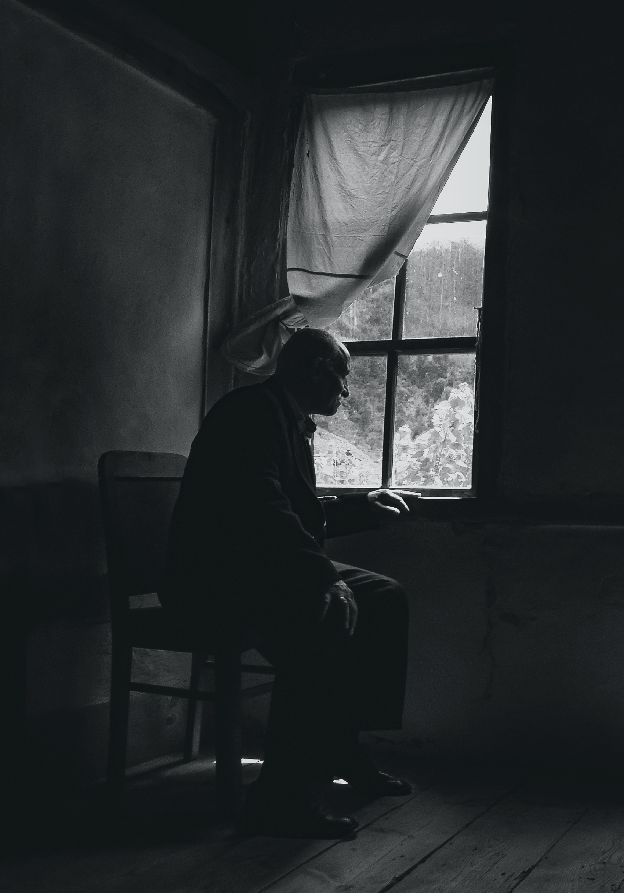

Mother Teresa once said “Loneliness and the feeling of being unwanted is the most terrible poverty”.
Whether we are rich, poor, young or old, loneliness can affect anyone. Loneliness is a social and societal issue. It is more prevalent among people who are over 60 years old. Indeed, 3 out of 5 women and 1 out of 5 men are unaccompanied in life, most often due to marital breakdowns or the premature death of the spouse. It is also estimated that 3% of elderly people are in total isolation in developed countries, meaning that they don’t have contact with their family or their friends.
As humans, we are happier when we live in a community rather than by ourselves. Loneliness can plunge us into a certain disgust for life mixed with shame at not existing for someone or for something. Losing the taste of life reduces our ability to move forward, dream and have fun.
Are there solutions to get out of isolation or to provide close support to isolated people in society?
Please do not hesitate to contact us with any questions or comments on this article. Picture from Harun Tan at Pexels